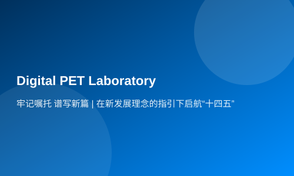

牢记嘱托 谱写新篇 | 在新发展理念的指引下启航“十四五”
今天，参加了全国两会的人大代表，政协委员们回到工作岗位，用不同的形式传达两会精神，大家表示，习近平总书记对于立足新发展阶段、贯彻新发展理念、构建新发展格局，推动高质量发展、创造高品质生活作出了一系列重要论述，凝聚起亿万人民一往无前的奋进力量。全省人民信心满满，要继续以奋斗者的姿态，开启“十四五”的新征程。
今天一大早，从北京回到武汉的闫大鹏，来到他所在的单位武汉锐科光纤激光公司，和技术团队开始对光纤激光器的加码升级进行研发，他们要把激光器的功率从三万瓦提升到十万瓦，来满足定制化激光焊接需求，让更多的湖北企业用上先进的制造设备。在闫大鹏看来，在全国两会上，习近平总书记多次提及高质量发展，这将是中国经济未来发展的主基调。
全国人大代表 武汉锐科光纤激光技术股份有限公司副董事长、总工程师闫大鹏：“我们今天上午开大会，贯彻总书记在两会上面的重要讲话精神，马上我们整个公司要行动起来，在创新驱动自主创新上要下很大的功夫，要加大研发投入，争取做到（研发经费占到）销售收入的8%，我们正在招兵买马，正在招聘高层次人才。”
创新因子，在湖北也处处都迸发着激情。在刚刚组建揭牌的光谷实验室里，全数字PET实验室的技术人员们正在对他们的第二代PET医疗设备进行系统研发。按照总书记提出的，要紧扣产业链供应链来部署创新链的要求，他们的第二代PET医疗设备的每个制造环节和部件，都是一个创新课题。
湖北省数字PET工程实验室项目负责人张博：“全球首台全数字PET的主要是帮我们解决的一个0~1的过程，我们现在是在从事全数字PET2.0，是一个全新的技术路线，是围绕整个高端医疗器械的产业链，在各个创新点上进行关键技术的研发和突破，预计在今年年底可以投放市场。”
把生态保护放在首位，体现了绿色发展的政治自觉。牢记总书记关于生态保护的嘱托，全国人大代表胡五清回村后的第一件事，就是带领村民们去植树，他给自己订了个目标，将村里的200亩绿色产业基地要扩大到500亩，不仅改善村居生态环境，还能带领村民就近就业。
全国人大代表、孝感市孝昌县新岗村党总支书记胡五清：“我们在推动乡村振兴过程中，还要把生态保护放在第一位牢固树立青山绿水就是金山银山的理念 结合自身特点和优势，做大做强苗木花卉产业，扩大优质果品种植面积，使我们群众多增收，有盼头。”
加强生态治理，湖北也从没有停歇过。在武汉，光谷生态大走廊项目正在进行最后的植树复绿工作，今年5月份就将正式开园，在中心城区形成一条长10多公里，连接九峰山、龙泉山两个生态功能区的绿色走廊。
长江生态环保集团有限公司党委书记、董事长赵峰：“这个光谷生态大走廊项目本身就是实现我们落实习近平生态文明思想的 一个重要举措，实际上也是生态文明体系建设纳入到五位一体这样一个总体战略布局，构建出我们城市水系自然绿色生态。”
开展党史学习教育，也是这次两会精神的重要内容。今年，湖北将在全省深入开展党史学习教育，以微党课展播、特色党建文化教育和党建活动等内容，用好湖北丰富的红色资源，来生动讲好中国共产党的故事。
住鄂全国政协委员、湖北省社会主义学院院长胡仲军：“我们要组织专家一起来进行党史学习，推出精品课程，用党的智慧来提升我们，做好本职的工作。”
如何做好党史学习呢？那就是让工作和学习融会贯通。发挥自身的教育资源优势，武汉大学和省内的部分企业单位开展了党建共建示范点，每个月会举办党史教育学习、新中国史等方面的培训，从党史中汲取持续奋斗的力量。
中建二局湖北分公司党委副书记贺亮：“走一些我们中国共产党一些比较有历史意义的一些地方，开展党史的知识竞赛，能够带动我们更多年轻人参与进来，来加强我们的党史学习。”
（湖北广电融媒体记者 冯志强 徐嵬毅 王亚峰 责任编辑 何潜彬）